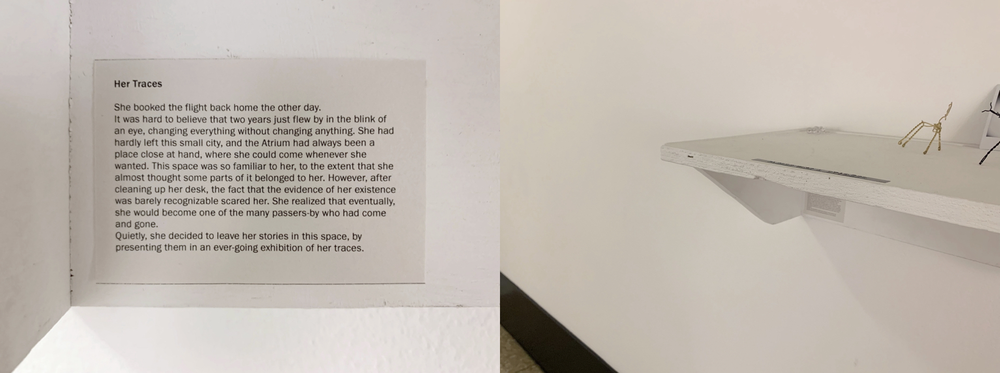
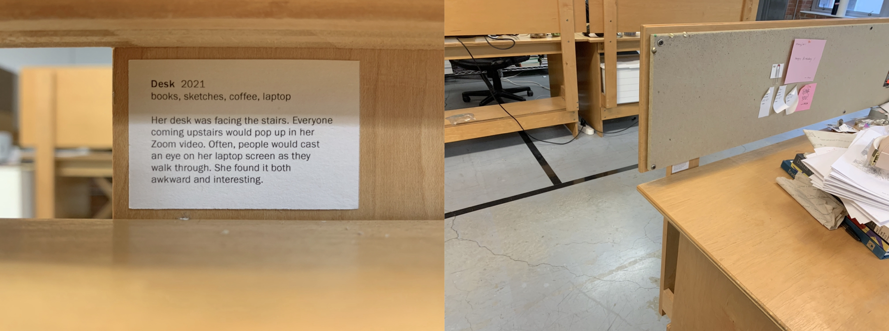
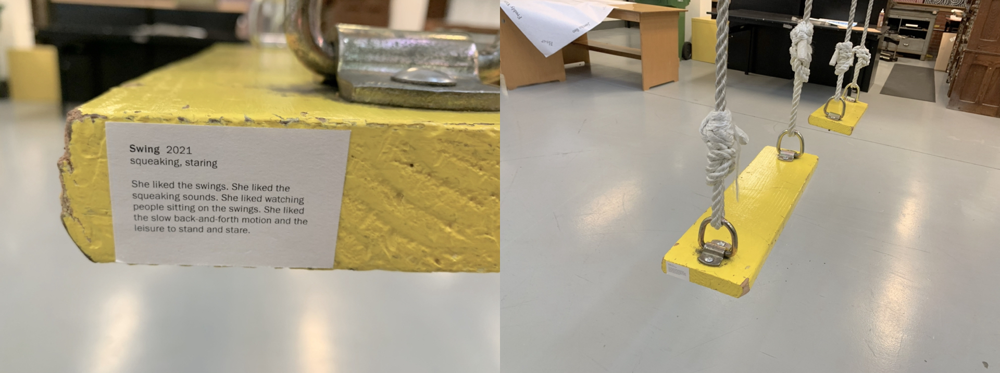
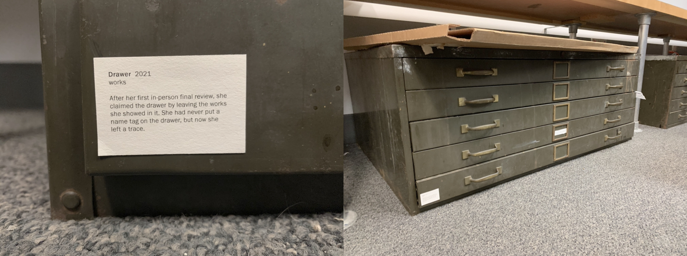
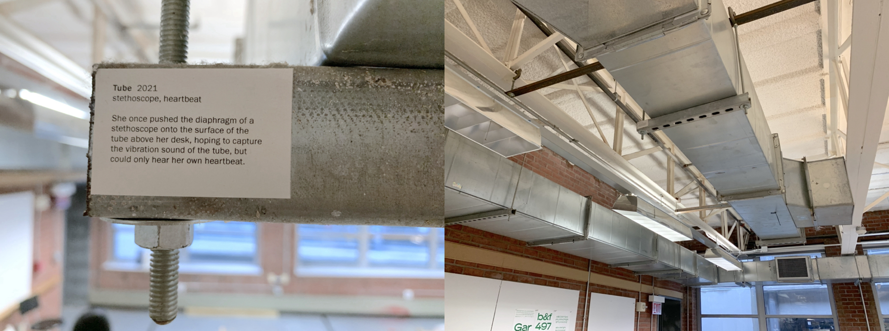
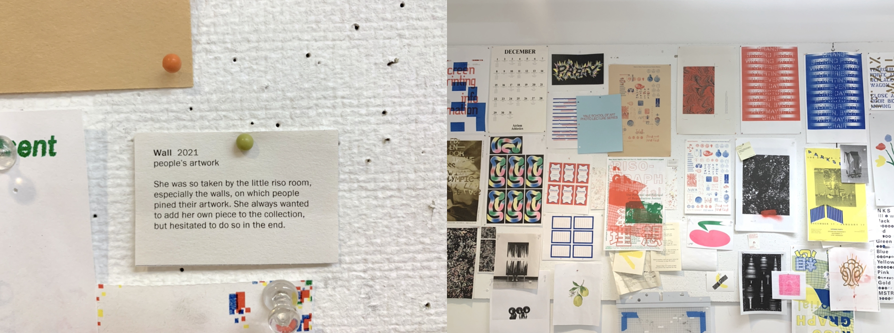
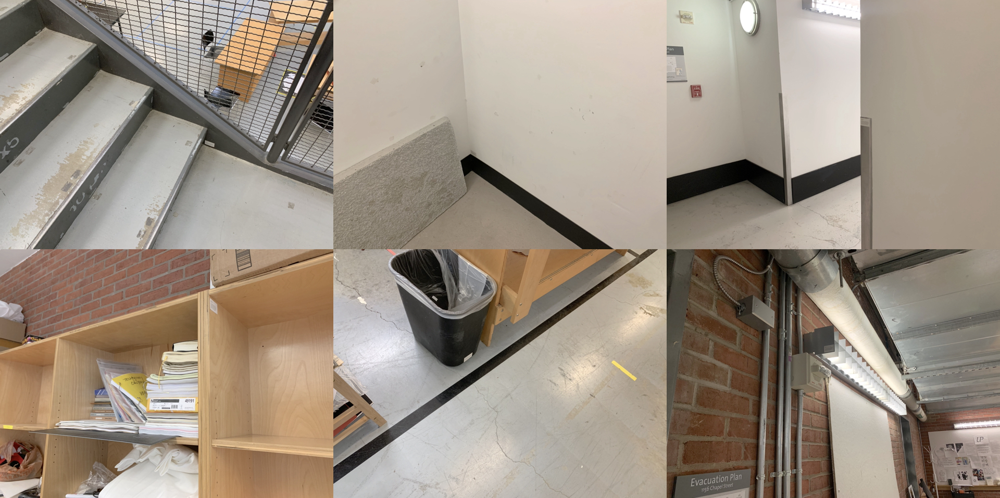
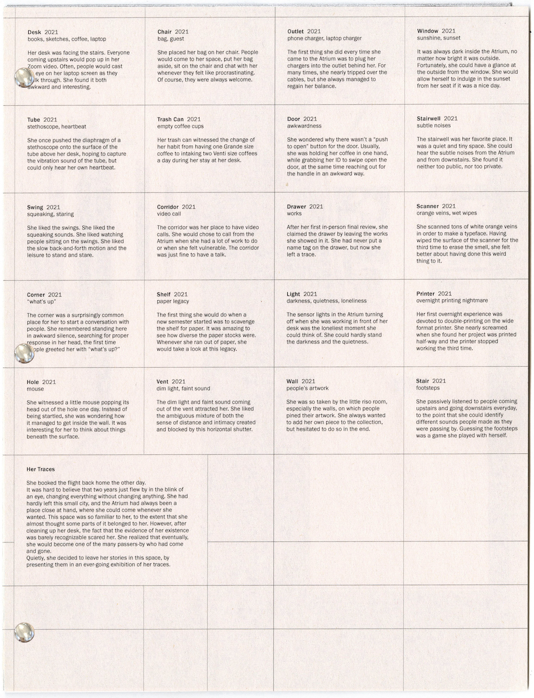
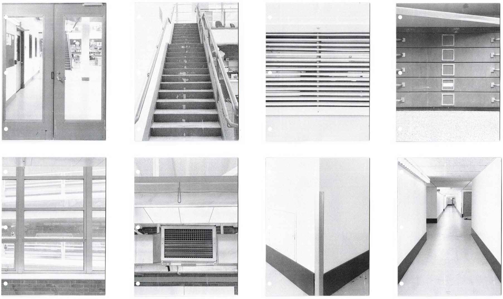

She booked the flight back home the other day.
It was hard to believe that two years had just flown by,
changing everything without changing anything. She had hardly left this
small city during that time, and the Atrium had always been a place
close at hand, where she could come whenever she wanted. This space was
so familiar to her, to the extent that she almost thought some parts of
it belonged to her. However, after cleaning up her desk, the fact that
the evidence of her existence was barely recognizable scared her. She
realized that eventually, she would become one of the many passers-by
who had come and gone.
Quietly, she decided to leave her
stories in this space, by presenting them in an ever-going exhibition of
her traces.